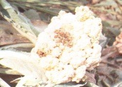
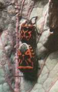
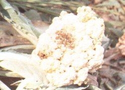

Káposztapoloska
Eurydema ventrale
Főleg a káposztaféléken táplálkoznak, de más keresztesvirágú növényeken - torma, retek - is előfordulnak. A lárvák és kifejlett egyedek egyaránt szívogatásukkal károsítják a növényeket. Szívásuk helyén legyezőszerű fehér foltok jelentkeznek, ezek elhalnak, sőt száraz időben az egész növény elpusztulhat. A magtermesztésnél is úlyos károkat okoznak azzal, hogy megszúrt becő előtt érik és benne csíraképtelenek a magvak. A káposztapoloska alapszíne piros, sárga, narancssárga, fekete rajzolattal. A kifejlett 6,7-10,2 mm nagyságú egyedek telelnek, s tavasszal korán előjönnek. Egy nőstény 60-70 tojást rak. A kikelő lárvák feketés színűek. Száraz, meleg tavaszi időjárás kedvezően hat szaporodásukra.
Védekezés:
- Tojásrakás előtt kiskertekben az imágók megsemmisítése.
- A káposztafélék viaszos levelén a permetlé legördül, ezért a permetléhez
nedvesítőszert adagoljunk.
Javasolt vegyszerek:
|
 |